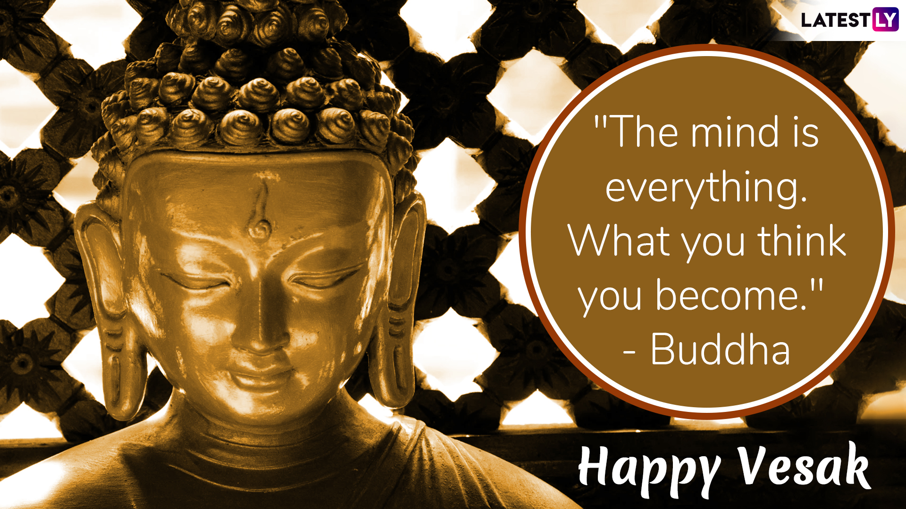

Vesak

Vesak (Pali: Vesākha, Sanskrit: Vaiśākha, Sinhala: වෙසක්), also known as Buddha Jayanti,Buddha Purnima and Buddha Day, is a holiday traditionally observed by Buddhists in South Asia and Southeast Asia as well as Tibet and Mongolia. The festival commemorates the birth, enlightenment (Nibbāna), and death (Parinirvāna) of Gautama Buddha in Theravada, Tibetan Buddhism and Navayana.
The name Vesak is derived from the Pali term vesākha or Sanskrit vaiśākha for the lunar month of Vaisakha, which is considered the month of Buddha's birth.In Mahayana Buddhist traditions, the holiday is known by its Sanskrit name (Vaiśākha) and derived variants of it.
In the East Asian tradition, a celebration of Buddha's Birthday typically occurs around the traditional timing of Vesak, while the Buddha's awakening and passing away are celebrated as separate holidays that occur at other times in the calendar as Bodhi Day and Nibbāna Day. In the South Asian tradition, where Vesak is celebrated on the full moon day of the Vaisakha month, the Vesak day marks the birth, enlightenment, and the ultimate passing away of the Buddha.Although Buddhist festivals have centuries-old tradition, the first conference of the World Fellowship of Buddhists held in Sri Lanka in 1950 formalized the decision to celebrate Vesak as the Buddha's birthday across multiple Buddhist countries. The resolution that was adopted at the World Conference reads as follows:
That this Conference of the World Fellowship of Buddhists, while recording its appreciation of the gracious act of His Majesty, the Maharaja of Nepal in making the full-moon day of Vesak a Public Holiday in Nepal, earnestly requests the Heads of Governments of all countries in which large or small number of Buddhists are to be found, to take steps to make the full-moon day in the month of May a Public Holiday in honour of the Buddha, who is universally acclaimed as one of the greatest benefactors of Humanity.
On Vesak Day, Buddhists all over the world commemorate events of significance to Buddhists of all traditions: The birth, enlightenment and the passing away of Gautama Buddha. As Buddhism spread from India it was assimilated into many foreign cultures, and consequently Vesak is celebrated in many different ways all over the world. In India, Vaishakh Purnima day is also known as Buddha Jayanti day and has been traditionally accepted as Buddha's birth day.
In 2000, the United Nations (UN) resolved to internationally observe the day of Vesak at its headquarters and offices
Maha ShivaRathri

Maha Shivaratri (IAST: Mahāśivarātri) is a Hindu festival celebrated annually in honour of the god Shiva. The name also refers to the night when Shiva performs the heavenly dance called Tandava.[5][6]
In every month of the luni-solar Hindu calendar, there is a Shivaratri – "night of Shiva" – on the day before new moon. But once a year, in late winter and before the arrival of Summer (February/March), this night is called "Maha Shivaratri" – "the Great Night of Shiva". This day falls in the month of Phalguna as per the North Indian Hindu calendar and in Magha as per the South Indian Hindu calendar (see Amanta and Purnimanta systems).
It is a major festival in Hinduism, and this festival is solemn and marks a remembrance of "overcoming darkness and ignorance" in life and the world. It is observed by remembering Shiva and chanting prayers, fasting, and meditating on ethics and virtues such as honesty, non-injury to others, charity, forgiveness, and the discovery of Shiva. Ardent devotees keep awake all night. Others visit one of the Shiva temples or go on pilgrimage to Jyotirlingams. The festival has been integral to Hinduism and its origin predates recorded history, but some western indologists believe this festival originated in 5th century BC. According to the South Indian calendar, Maha Shivaratri is observed on Chaturdashi Tithi during Krishna Paksha in the month of Magha, and in other parts of India, on 13/14 night of Krishna Paksha in Phalguna of Hindu calendar, the Gregorian date however remaining the same.
In Kashmir Shaivism, the festival is called Har-ratri or phonetically simpler Haerath or Herath by Shiva devotees of the Kashmir region. In recent years, the Isha Foundation has been a major patron of such festivities in India, with even Prime Minister Narendra Modi having attended the celebration hosted at the site of the Giant Adiyogi in Coimbatore.